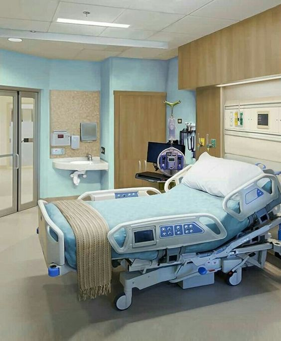

Sobre Nosso Centro de Internação
Internação
As internações para os usuários do Sistema Único de Saúde - SUS são realizadas na propia estrutura . O Hospital +VIDA - MG realiza internações diretas, dependendo da situação do paciente. São realizadas consultas, internações e exames laboratoriais. As unidades de urgência que atendem pelo SUS avaliam a necessidade de internação. Caso necessário, será expedida uma Autorização de Internação Hospitalar e uma solicitação de vaga na Central de Internação. Quando localizada a vaga, o paciente será encaminhado pela unidade solicitante. A Central de Internação funciona 24h por dia. As vagas para internação são solicitadas pelos serviços de urgência, centros de saúde e hospitais da capital e interior, por telefone e registradas em computador. Os casos são atendidos de acordo com a gravidade e ordem de chegada do pedido, avaliado por um médico.